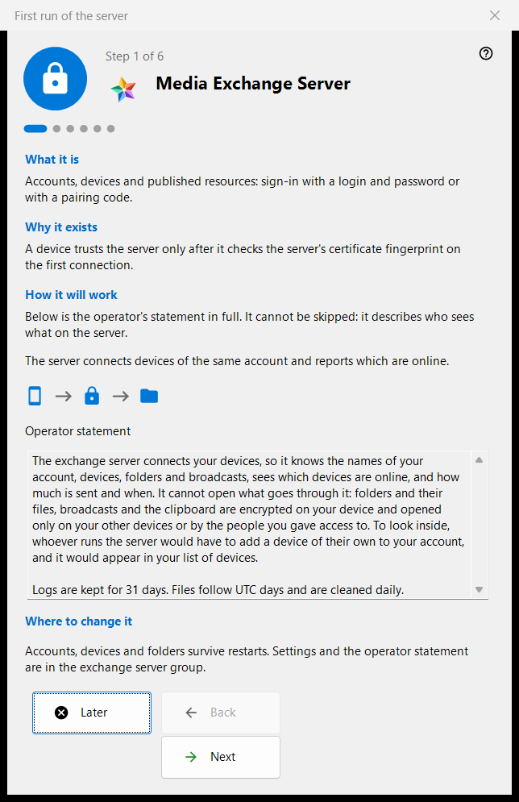
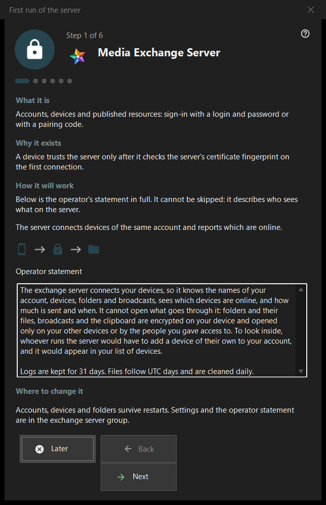

First run of the server
What this is for
A first-run guide for the exchange server group of the Share Manager. It explains what the computer becomes, shows the operator statement, sets the ports, the client address and the first account and ends on the server status. It opens only when the exchange server is present and enabled.


In this order
- Read the operator statement on the first page.
- Review the ports and the firewall rule.
- On a server edition without a service, decide about the Windows service.
- Fill in the address for clients.
- Create the first account.
- Check the certificate fingerprint and press 'Finish'.
The elements
Pages and buttons
The footer shows 'Step N of M'; 'Back', 'Next' and 'Later' work as in any wizard, and 'Finish' on the last page opens the exchange server group of the manager. A page can be skipped without changes: the server then stays off or as it was.
Operator statement
The full statement of who sees what on the server. It cannot be skipped. The server connects the devices of one account and reports which of them are online.
Ports and firewall
A meeting port for devices and a port range for third-party clients. Devices must know the server port, so changes apply to new codes only. The firewall rule belongs to the program, so a port change does not need a new rule. These values live in the exchange server group.
Windows service
Shown only on a server edition where the service does not exist yet. A service keeps the server available when nobody is signed in. The check box only remembers your consent: the service is registered after the first account exists, with one elevation prompt, and nothing is installed before. 'Register as a service..' in the exchange group does the same later.
Address for clients
'Address for clients (host:port):' is what other devices use to reach this computer. 'Suggest a local address' fills the field only when pressed. An empty address keeps a purely local first start valid, but hides broadcasts and folder connections from other devices.
First account
The account the first device signs in with. Choose 'Generate a password' or 'Enter your own password'; 'Connect this PC to the account' joins this computer to it. 'Next' creates the account, starts the server and checks the certificate. The password is shown once, in the existing dialog, and is not stored on this PC. A failure after the account was created does not remove it.
Server is ready
The last page names where the address, the login and the certificate fingerprint are recorded and offers 'Copy fingerprint' and 'Connection string and QR code..'. A device trusts the server after it checks the fingerprint on its first connection. The links 'Connect a phone (help)' and 'Publish the first folder (help)' lead to the matching help pages.
Manager settings · SFTP sharing settings · Exchange server settings